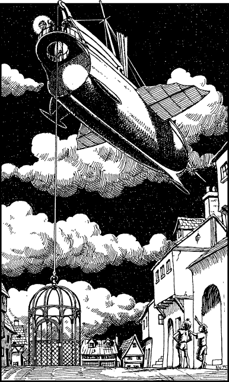

90
Lord Zinair tells the captain of The Azaktana to await his return. Then he accompanies you and Acraban along an avenue that leads away from the quayside and climbs steeply into the heart of the eastern quarter. Your first impressions of the port of Mydnight are less than favourable. In the stark glare of the full moon it seems to be little more than a brooding shamble of slate-roofed houses and reeking tenements built around a haphazard maze of narrow, rat-infested alleyways. At this late hour, few of the port’s inhabitants are abroad. The only people you see are the few who dare to peek at your passing through the mullioned glass of their wretched hovels.
The avenue leads eventually to a deserted market square which commands a view over the harbour below. Here you see a large iron cage with a thick cable attached to a ring at the centre of its roof. The cable is held taut by a winch fixed to the stern of the Starstrider which hovers 100 feet overhead. The faint hum of its magical engine can be heard wavering on the warm sea breeze. Acraban ushers you into the cage and clicks shut its iron door. He tugs a cord and immediately the cage is lifted off the ground and hoisted up to the rear deck of the skyship. Here you are welcomed aboard by the skyship’s crew, all of whom are young acolytes of the Magicians’ Guild of Toran. Acraban takes you to his quarters located below the forward deck where he offers you and Lord Zinair some food and wine. After many months away from home it is good to taste Sommlending fare once more.

Since his arrival in Mydnight earlier in the day, Acraban has learned that Prince Karvas does not reside here in the city. To search for him now would be futile and so you resolve to get some sleep and commence your hunt for the Prince at first light. Shortly after dawn, the three of you meet again on the main deck. Acraban suggests that you each spend the day scouting the city for information that may lead you to Karvas. He tells of three places where this information is most likely to be found. The first is a large trading post, known as Grosta’s Warehouse, located on the south side of the harbour. The second is the Hall of the Judicars, a base for the officers who are elected by the citizens of Mydnight to maintain law and order in their city. And the third is The Smitheries, the artisans’ and tradesmen’s district of Mydnight that is situated west of the quayside.
If you wish to visit Grosta’s Warehouse, turn to 48.
If you choose to visit the Hall of the Judicars, turn to 321.
If you decide to explore The Smitheries, turn to 226.